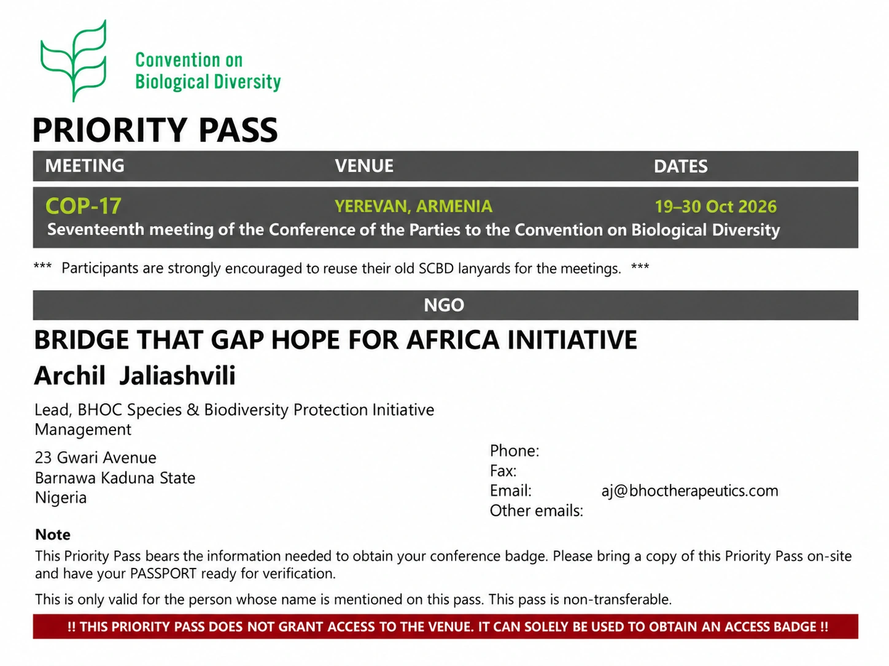

Tracking the people, science, funding and programs working to protect wildlife, restore endangered species and strengthen conservation medicine worldwide.
Updated 9 Oct 2026Global · newest firstScroll news ↓
LatestWildlife awarenessBHOC Species & Biodiversity Protection Initiative
One oxygen. Many lives. Share a free WWF wildlife ecard.
WWF offers free digital wildlife greeting cards for friends and family. The BHOC Species & Biodiversity Protection Initiative welcomes this simple way to share care for animals and nature: “We be of one blood, ye and I.” Different species, the same biological need for oxygen.
Why it mattersAwareness connects people with wildlife protection. BHOC examines the potential future role of species-specific veterinary oxygen-delivery research; this is not an assertion of WWF endorsement or wildlife treatment approval.
Living Planet Report 2026: wildlife decline remains severe, but recovery is measurable.
WWF's Living Planet Report 2026 reports an average 73% decline in the size of monitored vertebrate wildlife populations from 1970 to 2022, based on 35,803 population trends across 5,790 species. Freshwater populations show the steepest average decline at 85%. The same report also documents a crucial counterpoint: targeted, sustained conservation can deliver measurable recovery, including global wild tiger numbers rising from about 3,200 in 2010 to around 5,700 in 2025.
Why it mattersFor the BHOC Species & Biodiversity Protection Initiative, this is global context for why species protection must connect monitoring, veterinary and conservation capacity, long-term investment and measurable outcomes. It is not evidence of BHOC or HBOC efficacy in wildlife.

Armenia · YerevanCOP17 · Biodiversity and animal health
BHOC at COP17 Yerevan 2026: Animal Health and Biodiversity
Archil Jaliashvili has received COP17 accreditation and will join the delegation of Bridge That Gap Hope for Africa Initiative at the UN Biodiversity Conference in Yerevan, 19 to 30 October 2026.
We warmly thank Bridge That Gap Hope for Africa Initiative and personally its Executive Director, Gloria Bulus, for their cooperation. Meet us at COP17 to explore cooperation in animal health and species protection.
Cats are different: blood compatibility and donor welfare.
Cats need compatible blood, and healthy donors need careful selection, sedation assessment and monitoring. Read the source-linked article on feline transfusion compatibility and cat blood donation.
Personal reflection · Shared biologyBHOC Initiative · Author's interpretation
God's Design and the Biology We Share
Astrophysicist Willie Soon's reflection on Dirac's work inspires a personal interpretation by Archil Jaliashvili: 'I believe that God's design can also be seen in the biology shared by humans and many other species.' The article connects hemoglobin, oxygen delivery and the responsibility to protect life.
Why it mattersDifferent species. The same biological need: oxygen. A personal reflection connected with the BHOC Species & Biodiversity Protection Initiative.
Türkiye · IstanbulHistorical veterinary education · HBOC · Oxyglobin
From research to the veterinary textbook: Oxyglobin and HBOCs in fluid therapy.
Sıvı Sağaltımı [Fluid Therapy] by Prof. Dr. Tarık Bilal includes a dedicated section on hemoglobin-based oxygen carriers (HBOCs), discussing Oxyglobin in veterinary fluid therapy, including anemia, acute intravascular volume loss and hemorrhagic shock. Its inclusion in a university veterinary textbook is a useful historical marker: oxygen-carrier technology had moved beyond experimental literature into formal veterinary education.
Why it mattersVolume replacement ≠ oxygen transport. Restoring circulating volume and restoring oxygen-carrying capacity are different therapeutic functions. The textbook also reports strong quantitative comparisons with blood; BHOC Veterinary has flagged those statements for primary-source verification before treating them as efficacy evidence.
Canine · Working K-9 · Historical real-world evidencePenn Vet VHUP · Oxyglobin · Critical care
Wodan: a canine hero, a Penn Vet critical-care case, and a documented Oxyglobin intervention.
Bellwether No. 49 documented Wodan, a five-year-old Belgian Malinois police dog transferred to Penn Vet's Veterinary Hospital of the University of Pennsylvania after severe line-of-duty trauma. The report describes a complex course of specialist surgery, ICU monitoring, antimicrobial and supportive care. Oxyglobin was recorded as one component of that broader treatment strategy. Wodan later returned home and continued follow-up care and rehabilitation.
Why it mattersThis is a university-published historical real-world case showing that a veterinary hemoglobin-based oxygen carrier was used as part of complex emergency care. It documents use; it does not isolate causality or establish BHOC efficacy.
What 885 historical Oxyglobin case reports show about canine anemia — and what they do not.
Between December 1998 and August 1999, Biopure collected 885 veterinary reports through a Free Replacement Bag Offer. The 2000 booklet prints 146 selected canine case vignettes spanning blood loss, hemolysis and ineffective erythropoiesis. Across those clinical settings, the recurring pattern was oxygen-carrying support used as a bridge while the underlying cause was treated, surgery was performed, bleeding was controlled, compatible blood was prepared or endogenous erythropoiesis recovered. This is a manufacturer-collected descriptive archive, not a controlled efficacy trial.
Why it mattersThe archive maps clinical situations and operational needs; the official FDA field trial answers a different controlled question. Blood is a system. Oxygen delivery is a function. Dog evidence remains dog evidence.
BHOC reviews its Initiative in relation to the Kunming-Montreal Global Biodiversity Framework.
BHOC has reviewed the goals and targets of the Kunming-Montreal Global Biodiversity Framework to understand where the BHOC Species & Biodiversity Protection Initiative may contribute within the conservation work already led by scientists, veterinarians, institutions, local communities and international initiatives worldwide. Relevant areas include species recovery, veterinary capacity, knowledge sharing and access to practical conservation technologies. This is an independent positioning statement. It does not represent a formal partnership with, participation in or endorsement by the Convention on Biological Diversity.
Why it mattersThe purpose is not to claim that BHOC began this work. It is to define a focused contribution within the wider conservation ecosystem: oxygen-delivery science developed from biological principles created by nature, applied responsibly to animal health and species protection.
Bolivia · YungasSpecies discovery · Wildlife medicine · Blood compatibility
A new wild cat species. Do we know what blood we could safely give it?
Researchers have described Leopardus tilcayo, a small wild cat from Bolivia's Yungas and the first new living cat species formally described in more than a century. Genomic analysis suggests its lineage separated from related tiger cats about 1.4 million years ago. We did not identify published blood-type or transfusion-compatibility data for L. tilcayo at the time of this review. That matters in a veterinary emergency. Studies in other nondomestic felids show that blood typing alone may not predict transfusion compatibility, and compatible donors can be difficult to find, especially for rare species.
Why it mattersWe can discover a new species in 2026 and still know almost nothing about its transfusion biology. Species differ. Blood groups differ. Compatibility differs. But the fundamental need is the same: tissues need oxygen. This is why BHOC Veterinary is interested in donor-independent oxygen-delivery bridge concepts for wildlife emergencies, while species-specific safety and efficacy would still need to be established. One Oxygen. One Biology. One BHOC System.
New Zealand · NelsonCritically endangered species · Recovery milestone
Kākāriki karaka recovery reaches a new scale in Nelson.
New Zealand’s Department of Conservation reports that a joint annual survey counted more than 285 kākāriki karaka/orange-fronted parakeets at Brook Waimārama Sanctuary on one survey day and 229 on the next, almost 100 more than last year. The critically endangered species has around 450 birds remaining overall, and the sanctuary now supports the world’s largest population. The birds were first introduced there in 2021, making the new count a measurable recovery outcome rather than a simple release milestone.
Why it mattersTop-tier recovery outcome: reintroduction → sustained breeding → major population growth → world’s largest secure population.
United Kingdom · GlobalWildlife health · One Health · Conservation medicine
Wildlife health is broader than disease: a 200-year One Health perspective.
A new open-access paper in Proceedings of the Royal Society B uses the Zoological Society of London’s 200-year history to examine what wildlife health means in practice. Andrés Valenzuela-Sánchez and colleagues show that the scientific literature remains strongly disease-centred, especially around infection and disease ecology, while wildlife health also includes broader well-being, veterinary science, welfare, ecological responses, management and policy. Drawing on historical analysis and six applied examples, the authors argue for stronger routes from evidence to action and for a more reciprocal One Health model in which wildlife is not viewed only as a source of risk to people and domestic animals, but as an integral part of healthy social-ecological systems.
Why it mattersFor veterinary and wildlife medicine, the practical shift is important: diagnosis and disease surveillance are only part of health. Treatment, welfare, recovery, rehabilitation, release and the animal’s ability to function after intervention belong in the same One Health picture.
Do we have the right to depend on healthy animal donors?
Veterinary blood donation saves lives. But it also depends on healthy animals becoming donors. A new BHOC Veterinary research concept examines this question across species. In a study covering 29,201 feline blood-donation events, 95.6% involved sedation. Adverse reactions were uncommon overall, but conscious donors had 4.4 times higher odds of an adverse reaction. Beyond cats and dogs, the challenge becomes even more complex in horses, camels, birds, zoo animals, endangered species and marine mammals, where compatible donors may be difficult to identify, access or support in time.
Why it mattersThe question is not whether donor blood should disappear. It is whether veterinary medicine should also investigate a donor-independent, shelf-stable oxygen-delivery reserve for the critical period before compatible blood or definitive treatment becomes available.
United States · New York / Fresno, CaliforniaHistorical feature · K-9 / working-dog emergency medicine
25 years after 9/11: who helps the K-9s who help us? The Saxon Oxyglobin case.
Twenty-five years after 9/11, BHOC Veterinary remembers the search-and-rescue K-9 teams who worked beside first responders at the World Trade Center. On September 19, 2001, HHS reported as many as 300 rescue dogs at the site and 13 Veterinary Medical Assistance Team veterinarians providing emergency care. The documented 9/11 response includes veterinary treatment for fatigue, lacerations, smoke and dust inhalation, eye irritation, dehydration and exhaustion, but we have not identified a primary record confirming Oxyglobin use at Ground Zero. Less than a year later, on August 22, 2002, Fresno Police K-9 Saxon became a documented Oxyglobin real-world case after catastrophic gunshot trauma. In Biopure's 2002 Annual Report, Police Chief Jerry Dyer wrote that discussions with veterinarian Dr. Roger Gfeller left no doubt, in their view, about the pivotal role Oxyglobin played in saving Saxon's life. Fresno Police later established the Saxon Award in his honor.
Why it mattersWorking K-9s help protect human lives. Saxon’s documented Oxyglobin case shows why emergency oxygen-delivery tools for police and search-and-rescue dogs remain clinically relevant.
Global · Nairobi, KenyaGlobal flyway conservation & finance
Nairobi Flyways Declaration links migratory-bird recovery to development finance.
At the Global Flyways Summit, governments, scientists, NGOs, conservationists and financial institutions signed the Nairobi Flyways Declaration, committing to coordinated conservation across entire migration routes. BirdLife reports that three multilateral development banks are integrating flyway conservation into lending frameworks, with more than $6 billion in conservation finance being mobilised since 2021. The Asian Development Bank is mobilising $3 billion over 10 years for at least 50 priority wetlands; CAF is mobilising $3–5 billion through 2050 for more than 30 landscapes and seascapes; and the World Bank and BirdLife are mobilising several billion dollars across Africa, Europe and Asia. The scale matches the biological problem: 45% of migratory bird species are declining and one in nine is threatened with extinction.
Why it mattersTop-tier global initiative: cross-border conservation + multilateral development finance + whole-flyway scale
DR Congo · Virunga National ParkSpecies recovery & conservation medicine
Rescued Grauer’s gorilla gives birth after historic return to the wild.
Lulingu, a critically endangered eastern lowland (Grauer’s) gorilla rescued from the illegal wildlife trade at about 18 months old, has given birth after being rewilded at Mt. Tshiaberimu in Virunga National Park. She was one of four females returned from the GRACE sanctuary to reinforce a small isolated population judged at high risk of extinction without reproductive females. The infant, fathered by wild silverback Mwasa, shows that Lulingu has integrated into the wild group; both mother and infant were reported healthy, and none of the four rewilded females has required veterinary treatment for illness or injury since release.
Eastern Caribbean · St. Kitts and NevisOne Health & veterinary public health
Ross Vet and PAHO/WHO launch One Health partnership across the Eastern Caribbean.
Ross University School of Veterinary Medicine and the Pan American Health Organization/World Health Organization have signed a Framework Agreement to advance One Health across the Eastern Caribbean. The partnership covers veterinary and public-health education, interdisciplinary research, zoonotic and emerging-disease surveillance, disease elimination and regional capacity building. Ross Vet will contribute technical expertise for certification work on schistosomiasis and dog bite-mediated human rabies, while the wider programme will address antimicrobial resistance, climate change and emerging infectious diseases.
Why it mattersBHOC Initiative: veterinary medicine + One Health + disease surveillance + regional health capacity
Three Sumatran tiger cubs add to a global conservation safety population.
At Attica Zoological Park near Athens, three two-month-old Sumatran tiger cubs received their first vaccinations and identification microchips as part of an international effort to maintain a backup population for the critically endangered species. Zoo and wildlife veterinarian Dr. Arsinoi Psaroudaki, mammal curator Antonis Balas and head keeper Theodoros Babilis are among the team highlighted by AP. With as few as 400 believed to remain in the wild, managed zoo populations may support potential future reintroductions.
Why it mattersBHOC Initiative: veterinary medicine + endangered species + conservation
Assam advances ₹534 crore Wildlife Safari and Rescue Centre.
Assam is moving ahead with a 235-hectare wildlife complex in Dibrugarh. Phase I includes a veterinary hospital and wildlife rescue centre for species including rhinoceroses, tigers, leopards and bears; Phase II adds advanced research infrastructure. The project brings wildlife treatment, rehabilitation, research and conservation capacity into one major facility.
Why it mattersBHOC Initiative: veterinary + rescue + research infrastructure
Thirty turtle doves released to rebuild a South Downs stronghold.
Thirty European turtle doves were released in Hampshire after a roughly 98% UK population decline from their late-1960s peak to 2023. Habitat work includes restored ponds, hedgerows and food plants, while another 100 birds are being prepared for 2027. One released female returning to lay eggs is an early biological signal worth watching.
Global conservation translocation specialists meet in Edinburgh.
The 4th International Conservation Translocation Conference brings together specialists in reintroduction, ecosystem restoration and conservation management, with 174 presentations. Organisers include NatureScot, the University of Edinburgh’s Royal (Dick) School of Veterinary Studies, the Royal Botanic Garden Edinburgh and the Royal Zoological Society of Scotland.
Responsible wildlife tourism begins with preserving choice and distance.
Jeff Kremer shared a public campaign, drawing on material from Humane World for Animals, that challenges tourist attractions allowing direct contact with wild animals. The discussion highlights the long-term welfare cost of turning wild animals into photo props and calls for tourism that protects natural behaviour.
Why it mattersBHOC Initiative: animal welfare + public education
Federal order starts review of gray wolf and Mexican wolf protections.
A White House executive order directs the Interior Secretary, within 90 days, to determine whether gray wolves and Mexican wolves meet Endangered Species Act recovery criteria for delisting or downlisting. The order itself does not delist the wolves. It initiates a policy and scientific review that could materially change future protection and management.
Why it mattersConservation intelligence includes regulatory risk
Eight wild-born red-billed chough chicks mark a recovery turning point.
Eight chicks fledged naturally in Kent this summer, bringing the county population to 35 choughs, including nine born in the wild. The partnership led by Kent Wildlife Trust and Wildwood Trust returned the species after more than two centuries of absence. The key milestone is no longer release alone: the birds are breeding and expanding their range.
Why it mattersOutcome metric: survival + reproduction + range expansion
Mars Impact Fund backs long-term veterinary capacity through a $3 million WVS grant.
Andy Pharoah, Vice President of Corporate Affairs and Sustainability at Mars, is associated with a Mars Impact Fund grant round awarding more than $13 million to six partners. Worldwide Veterinary Service received $3 million for a Thailand rabies-elimination programme designed to strengthen local veterinary infrastructure and protect animals and communities. Durable veterinary capacity is as important as campaign activity.
Why it mattersBHOC Initiative: veterinary infrastructure + One Health
New research connects wildlife survival with territory, migration routes and access to resources.
Pablo P. Castelló, Faculty Co-Director of Animals Forward and Research Fellow in the Animal Law Program at the University of Denver, shared a new American Journal of Political Science publication on the political interests of wild animals. Treating an injured animal is only one part of protection when survival also depends on habitat, movement corridors and ecological continuity.
Why it mattersBHOC Initiative: conservation medicine + habitat protection
Kākāpō population reaches a recovery-era high of 325 birds.
Ninety chicks from the 2026 breeding season were added to the official population, taking the critically endangered kākāpō to 325 birds. The recovery programme began in 1995 with only 51 birds. New approaches increasingly use remote nest technology and reduced intervention, moving from intensive rescue toward more natural breeding and long-term population resilience.
Why it mattersRecovery metric: population growth + reduced intervention
BHOC Initiative Scout method: BHOC Initiative Scout applies a high publication threshold and screens every candidate for duplication. New items are added only for exceptional rescue or recovery outcomes, globally significant conservation initiatives, substantive veterinary evidence milestones or other material developments; routine news is excluded.
BHOC channels
Evidence and professional discussion.
BHOC LinkedIn
Company news, scientific discussion and BHOC publications.


.jpg?width=900)